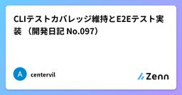

Zennの「Test」のフィード
フィード

動体検知カメラで行った終夜テストのMQTTデータを可視化する
Zennの「Test」のフィード
終夜テストアナログ電波時計の針が夜更けに勝手にくるくる回る怪現象が起こっているとの報告。原因を探る前にまずは現象を把握するためのデータを揃えたいのですが夜中は寝てる。ESP32-CAMのカメラで動体検知してMQTTデータを送信。可視化ツールでグラフ化して何時ごろに動きがあるのか／動く条件はあるのか探る仕組みを作ります。 システム構成・動体検知カメラ ・・・ ESP32-CAM・データ可視化用 MQTTクライアントアプリ ・・・ MQTT Explorer・MQTT ブローカーサービス ・・・ mqtt.eclipseprojects.io または test.mos...
10時間前

『テストの7つの原則』〜 パート④ 〜
Zennの「Test」のフィード
はじめに現在、アプリ開発者としてプロダクトの持続的な成長やユーザーへのコミットに寄与するためにも、SDLC全体を見渡して開発をすること、および、それにはテストに関する体系的な知識が必要だと考え、それを効率良く学べるJSTQB Foundation Levelの資格試験の勉強をしており、そこでのインプットを記事にしたいと思います。今回はその中でも「テストの7つの原則」の一部について記事にしたいと思います。なお今回は 欠陥の偏在こちらの原則について記事にしてみようと思います。 欠陥の偏在とは皆さんはこんな場面に遭遇したことはありますか？『この機能、...
1日前

Next.jsにVitest導入したので備忘も兼ねて手順をまとめる
Zennの「Test」のフィード
Next.jsプロジェクトでのVitest実装備忘録 はじめにNext.jsプロジェクトにテスト環境を構築する際、従来はJestが主流でしたが、最近はVitestが注目を集めているようです。VitestはViteベースの高速なテストランナーで、Next.jsとの相性も良く、設定も簡潔に済ませることができるとのことです。参考：VitestとJestの比較サイト今回はNext.jsプロジェクトにVitestを導入したのでその手順を備忘も兼ねてご紹介します。良かったら参考にしてください。 Vitestを選ぶ理由高速な実行速度: Viteベースのため、テストの実行が非...
2日前

【Request for Comments: 2606】テストメールでよく利用する"example.com"のメモ
Zennの「Test」のフィード
課題ウェブ開発などでexample.comがテストメールやサンプル表示（ダミーテキスト）として利用されますが、なぜ使っていいのかよく忘れるのでメモ。 RFC 2606インターネットの混乱や衝突を防ぐ目的で、プライベートのテストのためにトップレベルドメインとセカンドレベルドメインを、ちょっとだけ予約させちゃうね、という決まりです。1999年に制定されたようです。以下のオフィシャルドキュメントの四章にもある通り、「Internet Assigned Numbers Authority, IANA」という組織によって予約がされています。 予約済みのセカンドレベルドメイン名...
2日前

Flutterアプリに画像回帰テストを導入する方法（Alchemist + GitHub Actions）
Zennの「Test」のフィード
こんにちは、takuroです。今回は、Flutterアプリに画像回帰テスト（Visual Regression Test）を導入方法を紹介します。 背景開発中のUIコンポーネントに対し、以下のような課題を感じていましたデザインの崩れやリグレッションがレビューでしか検出されないPRごとにUIの変化を確認するのが手間コンポーネントが増えるほど、人的チェックのコストが増大これらの課題を解決するために、「UIの見た目をテストする仕組み」として画像回帰テストの自動化を導入しました。 AlchemistとはAlchemistは、FlutterアプリケーションのUIコンポーネ...
3日前

冷蔵庫の写真からレシピを提案するAIエージェント
Zennの「Test」のフィード
背景と課題忙しい日々での料理の悩みと食品ロス: 冷蔵庫を開けると様々な食材が入っているのに、「何を作れば良いかわからない」という経験はありませんか？ これは俗に「冷蔵庫ブラインドネス」とも呼ばれ、目の前に材料があっても組み合わせが思いつかない現象です。実際、家庭内で使い切れずに捨てられる食品は非常に多く、例えばイギリスでは年間470万トン（家庭で週8食分に相当）の食品が無駄にされているという報告もあります。米国でも平均的な家庭が週に6.2カップ分の食品を捨てており、年間では322カップ（テイクアウト用容器360個分）に上るとの調査結果があります。人々は「いずれ食べるつもり」で食材を買い...
3日前

はじめての記事
Zennの「Test」のフィード
テスト用にアカウントを作ってみた。どんなことが出来るのか試したく記事を書いていくYahootest.jsconsole.log('test');BingYouTube 見出し😀😁😂
3日前

単体テストの考え方/使い方【第3部】を読んで
Zennの「Test」のフィード
はじめに単体テストの考え方/使い方の【第3部】を読んで私が解釈した内容をもとに、ソフトウェア開発におけるテスト戦略のうち、統合テストについてまとめました。単体テストが個々のユニットの正確性を保証する一方で、複数のコンポーネントや外部システムが連携する部分の動作を検証する「統合テスト」もまた不可欠です。この章では、統合テストの定義、その範囲、そしていつ、どのように実施すべきかについて解説します。実際に本を読んでみると理解度が変わるので、気になれば読んでみてください。違う理解等があれば、コメント等お願いします😌https://zenn.dev/nasubibocchi/artic...
3日前

単体テストの考え方 / 使い方【第2部】を読んで
Zennの「Test」のフィード
第2部：単体テストとその価値「良い単体テスト」とは何でしょうか？テストコードもまた負債となり得るため、その価値を最大限に引き出す設計が求められます。『単体テストの考え方 / 使い方』（マイナビ出版）の内容を読んで、私が解釈した内容をまとめました。実際に本を読んでみると理解度が変わるので、気になれば読んでみてください。違う理解等があれば、コメント等お願いします😌https://zenn.dev/nasubibocchi/articles/88e4333fbe6ff4 4本の柱良い単体テストは、以下の4つの柱によってその価値が支えられます。退行（regression...
3日前

単体テストの考え方 / 使い方【第1部】を読んで
Zennの「Test」のフィード
はじめにソフトウェア開発において、品質を担保するために欠かせないのが「テスト」です。中でも「単体テスト」は、開発の初期段階でバグを発見し、システムの品質を向上させる上で非常に重要な役割を担います。しかし、「単体テスト」と一口に言っても、その定義や手法は多岐にわたります。ここでは、『単体テストの考え方 / 使い方』（マイナビ出版）の内容を読んで、私が解釈した単体テストの基本的な概念から、その価値を最大限に引き出すための考え方までを解説します。実際に本を読んでみると理解度が変わるので、気になれば読んでみてください。違う理解等があれば、コメント等お願いします😌https://zen...
4日前


スクラム開発のQA改善で効果的だった5つの取り組み 1
1
Zennの「Test」のフィード
こんにちは。クリフォアアプリチームでエンジニアをしているキタです。クリフォアアプリチームではスクラム開発を実践していますが、QA に関してさまざまな課題を抱えていました。抱えている課題の解決に向けて約 1 年間、チームの QA エンジニアや所属メンバーと協力して改善に取り組んできました。その結果、成果が出始めているので、今回は効果的だった 5 つの取り組みについて紹介します。 実施した取り組み本記事では以下の 5 つの改善活動について、課題・取り組み・効果を具体的に紹介します。テストの目的を明文化 - メンバー間の認識齟齬を解消スプリント内でテストまで完結 - リ...
4日前

PlaywrightのE2Eテストは攻撃判定されないのか？ AWS WAFと共存するための実践的セキュリティ対策
Zennの「Test」のフィード
はじめにPlaywrightを導入して、ローカル環境（localhost）でのE2Eテストは完璧！「さあ、ステージング環境で本格的にテストするぞ！」と意気込んだ矢先、CI/CDからのテストが失敗。ログを見ると、どうやらアクセスが拒否されている...。こんな経験はありませんか？これは、E2Eテストの自動化ツールが、意図せずセキュリティシステムに「攻撃」と見なされてしまう、非常によくあるパターンです。本記事では、Playwrightを使ったE2Eテストで直面しがちな、以下の2つのセキュリティ課題に焦点を当て、その原因と具体的な解決策を、特にAWS環境を例にとって解説します。テス...
5日前

機能開発を終えテストと品質を徹底的に固めた一日（開発日記 No.098）
Zennの「Test」のフィード
!この記事はgemini-2.5-flash-preview-04-17によって自動生成されています。 関連リンク前回の開発日記 はじめに昨日はテストカバレッジの維持とE2Eテストの実装に時間を費やしました。そして今日、いよいよ機能開発を一段落させ、明日のリリースに向けて最終的な品質向上に全力を注ぐ一日となりました。今日の最重要テーマは、テストカバレッジの維持・向上、E2Eテストの拡充、そしてテンプレート・モデル指定機能のテスト強化です。 背景と目的今回の開発サイクルで計画していた主要な機能開発は、本日で完了させる予定でした。明日にはリリース作業を控えているため...
6日前
【Go】簡単なユニットテストのサンプルコード
Zennの「Test」のフィード
概要Goのテストコードのとても簡単なサンプルコードテスト対象コード、テストコード、テストの実行方法を記載 サンプルコード ディレクトリ構成などGoでは、_test.go****で終わるファイルにテストコードを書くTestXXX****という関数名にするtest_demo/├── calc.go└── calc_test.go ← テストコードはここ calc.gopackage calcfunc Add(a, b int) int {return a + b} calc_test.gopackage calcimport "...
8日前

CLIテストカバレッジ維持とE2Eテスト実装 （開発日記 No.097）
Zennの「Test」のフィード
!この記事はgemini-2.5-flash-preview-04-17によって自動生成されています。 関連リンク前回の開発日記 はじめに昨日はCLIモジュールのテストを安定させ、カバレッジを84%まで向上させることができました。テストが全件パスするようになり、CLIの基盤部分の品質には一定の手応えを感じています。今日は、このテストカバレッジを維持・向上させつつ、さらに一歩進んでアプリケーション全体の利用フローを確認するためのE2E（エンドツーエンド）テストの実装に挑戦しました。 背景と目的これまでのテストは主に単体テストや結合テストが中心でした。これらは個々...
8日前

とりあえず、Zennの書き方で遊んでみる(公式からただコピーして遊ぶだけ)2
Zennの「Test」のフィード
概要基本的には個人用です。（すみません）ただ書き方で遊んでみたかったのです。 感想埋め込みがうまくいかないことがある。iframeをそのまま使えたら、楽な気がする。 Gist Codepen (猫はいつもいいね🐈) Slideshare (大共感) Speakerdeck (フィンランドサウナはいつか行ってみたい) Docswell (またねこ) codesandbox (やはり猫) Stackblitz (もう一度猫) figma (ミーム行ってみよう) blueprintue (特に面白いのが見つからないのでサンプル...
8日前
「思いつき」に依存しないテストー 観点リスト
Zennの「Test」のフィード
Qiitaからの移植第一弾です はじめにプロダクトの品質を検査する時には欠かせないテスト。ただ、そのテストがその時の思いつきや、行き当たりバッタリで行われているとしたら…プロダクトの品質状況については当然、疑問が残りますよね。テストは意外とクリエイティブなお仕事なので、属人化しやすいと感じています。ということで、いつ誰がテストしても同じバグを検出できる方法を模索していました。そこで導入したのが「テスト観点リスト」です。 テスト観点とはどのような角度から、どのような目的でテストを実施するかという視点 です。ISTQB glossary（QAの用語集）にもテスト観点に関...
8日前
変更差分からユニットテスト/結合テスト/システムテストのテスト観点を出せるのか？【cursor】
Zennの「Test」のフィード
Unityで横スクロールのシューティングゲームを開発しています。(個人の趣味）新しい武器アイテムを追加したのでそのテストが必要となりました。そこで考えたのは以下。「AIで影響範囲を加味してユニットテストレベル、インテグレーションテスト(結合テスト)レベル、システムテストレベルのテスト観点を出せないか」試してみたのでご興味ある方はご覧ください。使用しているエディターはcursorで、モデルはclaude-4-sonnetです。 テストの基本 テストでやること3つテストにはおおよそ3つやることがあります。1つめは、決めたことが決めた通り動くか確認する活動。ユニットテス...
8日前
単体テストの始め方/作り方
Zennの「Test」のフィード
タイトルは『単体テストの単体テストの考え方/使い方』のパクりオマージュです[1].https://www.youtube.com/watch?v=WGqs5hnruGYAIによって生成した音声概要. 不正確な情報や音声の乱れが含まれる場合があります.今日, 業務で扱うコードでは品質向上や変更容易性といった観点から開発者自身が行う自動テストが重要な役割を担っています. しかしプログラミングの学習ではテストを中心として学ぶ機会はそれほど多くないでしょう. そのため単体テストを書いてみようと思っても, そもそも書き方がわからないといった悩みを抱える人も多いのではないでしょうか. プログラ...
9日前